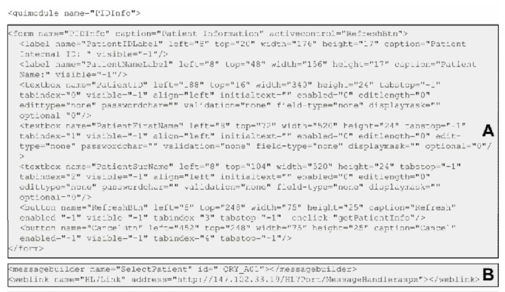

module), as well as additional Action handlers. For example, changes in business processes
or operational workflows result in the need for exchanging new messages. New Action
handlers can be implemented for processing these messages and the Controller can be
easily configured to dispatch the appropriate message to the dedicated Action handler.
Presentation Layer services. The Presentation layer services of the framework contain
a set of tools and methods targeting the development of adaptive XML-based user
interface modules. Using these tools and methods one can assemble user interface
modules from XML documents. We call these documents user interface documents. An
example of such a document is shown on Figure 7.
The key elements of the user interface document are:
- Serializable User Interface Components: The framework provides a set of common
visual controls like menus, text boxes, buttons, list boxes, and so on that support
XML serialization and a set of specialized user interface controls for handling the
framework’s data model that also support XML serialization. These controls
support direct binding to framework’s message structures. Serializable forms and
dialogs are also available as part of the framework. An example definition of such
components is shown on part A of Figure 7.
- Serializable non-visual Components: A user interface document contains also
XML descriptions targeting non-visual components of the framework that also
support XML serialization. These components undertake a set of operations such
as sending and receiving documents to/from the Controller, sending and receiving
documents to/from different devices, such as printers or file systems and trans-
forming documents. An example definition of such components is shown on part
B of Figure 7. A complete user interface module is a collection of objects capable
of accepting and producing XML descriptions. We call these objects Xml objects.
New Xml objects can be created by anyone planning to extend the user interface
infrastructure of the framework. The basic interface of an Xml objects contains only
three operations: the Describe operation supporting the initial definition and
construction of the object based on an XML description, the LoadXml operation
supporting the loading of an XML description from the object, and the Xml
operation supporting the generation of an XML description by the object.
-
Data Exchange between Xml Objects: The exchange of data between different Xml
Objects makes use of XSLT transformations to restructure XML descriptions
generated from one type of object to descriptions suitable for loading from another
type of object. An example of a transformation is shown on part C of Figure 7.
-
XML Description of Data Flow: An XML vocabulary has been defined in order to
describe the data flow among Xml Jobs. We call these descriptions Xml Jobs.
The Xml Jobs behave as event handlers for the Xml Jobs. An example of an Xml
Job is shown on part D of Figure 7.
This approach results in an open and extensible set of tools capable of describing and
implementing client side business logic modules portable to different platforms and
environments.
Figure 7. A user interface document


From our experience in developing and using our framework, we would like to emphasize
the following:
- Using XML not only as the format for exchanged data but also for the native
environment for business logic description, UI description, and business objects
definition results in a rich metadata repository, providing true customization
capabilities, enabling independent UI development and allowing the transition to
future technologies.
- Inherent support of messaging standards assists in achieving the interoperability
requirement.
- The adoption of messaging communication protocol (realized through the adop-
tion of Web Services) leads to a loosely-coupled architecture that also contributes
to the extensibility and better maintenance of the delivered software.
Our approach in the application framework development up to now concentrates more
on providing basic functionality to the developer in order to deliver quickly robust
applications. As a result, our framework lacks the wide support to other standards like
DICOM. However, now we have acknowledged the value of such support in order to
cover the entire HC domain.
What the Future Holds
Nowadays it is commonly accepted that standardization at all levels is more than critical.
Efforts for harmonization among several standardization bodies in the area of HC, give
hope for achieving one global set of standards in the future.
Rouggery (2003) at the purpose section of Web Services Profile presenting its scope,
more or less describes the future as follows: “The ideal situation that we will be looking
at is a HC environment where “plug-n-play” interoperability via Web Services is a reality.
In this environment Independent Software Vendors (ISV) and corporate developers
implementing HL7 interfaces can write generic and reusable classes, subroutines, and
modules consistent with the guidelines set forth by the HL7 standard for Web Services
standards in order to handle HL7 message traffic from a potentially unlimited number of
connecting applications and services. Applications that “expose” HL7 messages (e.g.,
Web Services servers) will do so according to the HL7 Web Services Profile (WSP)
guidelines; “consumers” of HL7 messages (e.g., Web Services clients) can be written
without prior knowledge of the application that they will ultimately end up talking to. In
addition, this “plug-n-play” environment will take advantage of supporting discovery
protocols such as UDDI to break the rigidity of the current hard-coded message routing
infrastructures of most Healthcare enterprises”. We can not be certain, that the widely
adopted standard for HC messaging in the future will be the HL7; but it’s very likely to
witness such a scenario. Web Services for sure will play a very important role in the future
of HC informatics.
Conclusion
The healthcare sector is characterized by a continuously growing competition for
survival under difficult economic conditions of scarce resources and limited growth with
the constant threat of tightened regulations, public scrutiny, and negative media
exposure. Consequently, HC providers are increasingly seeking opportunities in the
information technology (IT) field to operate more effectively and efficiently, and to
reduce the overall costs of healthcare delivery while improving the quality (Ashry &
Taylor, 2000).
The HC software community is moving towards the notions of openness (based on
officially approved and globally acceptable standards) and modularity to tackle the
integration challenge (Blobel & Holena, 1997, p. 24). Open architectures based on
officially approved and globally acceptable standards can contribute to interoperability.
The high rate of change creates the need for systems that have the ability to evolve and
adapt to the new conditions without excessive cost. Modular software design enables
best of breed modules—handling emerging and even unpredictable user or unit require-
ment—sto be gradually added into the systems and successfully glued within the overall,
distributed architecture.
In order to achieve the above goal, there is a need for a systematic way of developing
applications targeting the Applications layer. An effective means to realize it is the use
of Application Frameworks. Such Application Frameworks should make use of the
existing standards in order to reap the benefits of the significant work done in the domain,
presenting the knowledge that lies within the standards and thus introducing them in
daily use.
The use of Application Frameworks will result in achieving interoperability within HIS
both on a functional and on conceptual level, reinforcing the role Hospital Information
Systems play in healthcare.
Acknowledgments
The authors would like to thank Aggelos Androulidakis and George Karkalis for their
contribution to the framework development, as part of the software development and
system design team, as well as Miss Chryssa Marinou for her valuable help with English
language issues.
References
Ashry, N. & Taylor, W. (2000). Requirements analysis as innovation diffusion: A
proposed requirements analysis strategy for the development of an integrated
hospital information support system [Electronic version]. Proceedings of the 33rd
Hawaii International Conference on System Science, Hawaii. Retrieved April 14,
2003, from IEEE Computer Society Digital Library.
Beale, T. (2002) Archetypes: Constraint-based domain models for future-proof informa-
tion systems. Retrieved March 10, 2004, from the openEHR Web site http://
www.openehr.org/downloads/archetypes/archetypes_new.pdf
Beale, T., Goodchild, A. & Heard, S. (2002). Design principles for the EHR (version 2.4)
April 1, 2002. Retrieved January 13, 2004, from the openEHR Web site http://
www.openehr.org/downloads/design_principles_2_4.pdf
Beeler, G., et al. (1999). Message development framework (version 3.3). Retrieved March
15, 2004, from the HL7 Web site http://www.hl7.org/Library/mdf99/mdf99.pdf
Blobel, B. & Holena, M. (1997). Comparing middleware concepts for advanced healthcare
system architectures. International Journal of Medical Informatics, 46, 69-85
Case, J., Mckenzie, L., Wellnet, A. & Schadow, G. (2003). HL7 Reference Information
Model (version 02-02). Retrieved March 15, 2004, from the HL7 Web site http://
www.hl7.org/Library/data-model/RIM/C30202/rim.htm
CEN TC 251 (1998). prENV 12967-1 - HISA Part 1: Healthcare Middleware Layer.
[Standard]
CEN TC-251, (n.d.). About TC-251. Retrieved March 15, 2004, from the CEN TC-251 Web
site http://www.CEN/TC251.org
Codenie, W., De Hondt, K., Steyaert, P. & Vercammen, A. (1997). From custom applica-
tions to domain-specific frameworks [Electronic Version]. Communications of the
ACM, 40(10), 71-77.
De Velde, V. (2000). Framework for a clinical information system. International Journal
of Medical Informatics, 57, 57-72.
Digital Imaging and Communication in Medicine (DICOM), PS 3.1, (2003). National
Electrical Manufacturers Association. Retrieved February 20, 2004, from NEMA
Web site http://medical.nema.org/dicom/2003.html
Fayad, M. & Hamu, L. (2000). Enterprise frameworks: Guidelines for selection [Electronic
Version]. ACM Computing Surveys, 32(1). Retrieved September 15, 2003, from the
ACM portal Web site http://portal.acm.org/citation.cfm?doid=351936.351940
Fayad, M. & Schmidt, D. (1997). Object-oriented application frameworks [Electronic
Version]. Communications of the ACM, 40(10), 32-38.
Fayad, M., Schmidt, D. & Johnson, R. (1999). Object-oriented frameworks: Problems &
experiences in building application frameworks. John Wiley.
Gorissen, B. (1997). DICOM in a Nutshell, Retrieved February 1, 2004, from the Philips
Medical Systems Web site ftp://ftp-wjq.philips.com/medical/interoperability/
out/DICOM_Information/d2course.pdf
HANSA. (n.d.). Home page. Available at http://www.sintec.ro/hansa/index.html
HL7 (n.d.). What is HL7? Retrieved March 15, 2004, from the HL7 Web site http://
www.hl7.org/about
HL7 (2003). HL7 messaging standard version 2.5 [ANSI Standard].
HL7 (2004). HL7 V3 Guide, version 3 ballot 6 foundation documents. Retrieved March
1, 2004, from HL7 Web site members’ area http://www.hl7.org/v3ballot6/html/
foundationdocuments/welcome/index.htm
IBM Corporation, Microsoft Corporation (April 7, 2002). Security in a Web Services
world: A proposed architecture and roadmap. Whitepaper Version 1.0. Retrieved